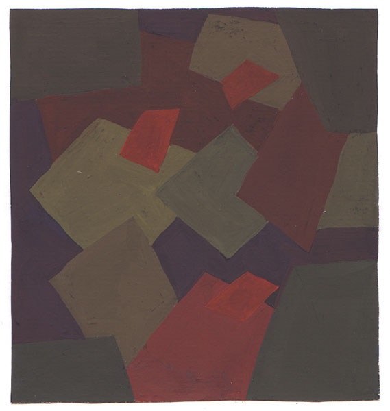

Полярная, зачерненная комп. в теплой гамме
Трехцветие в разбеленном колорите

Трехцветие в зачерненном колорите
Монохромия в теплой гамме
Монохромия в холодной гамме
Монохромия в теплой гамме
Монохромия в холодной гамме
Полярная комп. в зачерненном колорите
«—» в пастельном колорите
«—» в разбеленном колорите
Полярная комп., разбеленный колорит, холодная гамма
Полярная комп., насыщенный колорит
Полярная комп., зачерненный колорит, теплая гамма
Монохромия
Монохромия